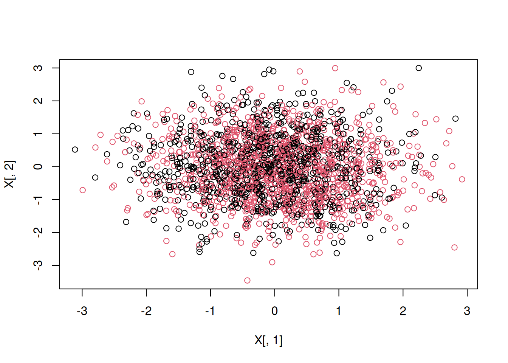

6.7 Inverse Probability Weighting (IPW)
A more natural way to exploit the condition of unconfoundedness is to weight observations by their propensity score, which is known as the inverse probability weighting. As before \(\hat{e}(x)\) is defined as an estimated propensity score.
\[\begin{equation} \hat{\tau}_{IPW} = \frac{1}{N}\sum_{i = 1}^{N} \Bigg(\frac{Y_i . W_i}{\hat{e}(X_i)} - \frac{Y_i . (1-W_i)}{1 - \hat{e}(X_i)}\Bigg) \tag{6.10} \end{equation}\]
Intuitively, observations with high propensity score within the treated group are weighted down, while observations with higher propensity score in the control group are weighted more. In this way, propensity score is used to balance the differences in covariates across the treatment and control groups. Note that the validity of \(\hat{\tau}\) still hinges on the unconfoundedness assumption. Any inference that you make is only good if your assumption holds.
Limitation of IPW Estimate. One way to analyze the accuracy of \(\hat{\tau}_{IPW}\) is to compare it with the oracle IPW estimate, \(\hat{\tau}_{IPW}^{*}\). The oracle estimate is obtained from the known propensity score. Briefly, comparison between \(\hat{\tau}_{IPW}^{*}\) and \(\hat{\tau}_{AGG}\) suggests that the oracle IPW under-performs \(\hat{\tau}_{AGG}\). In other words, the variance of the oracle estimate is larger than that of \(\hat{\tau}_{AGG}\).
Algorithmically, we can form score as:
\((\frac{Y_i \times W_i}{\hat{e}(X_i)} - \frac{Y_i \times (1-W_i)}{1 - \hat{e}(X_i)})\)
The mean of it results to \(\hat{\tau}\) and the standard error of the estimate is simply \(\frac{\hat{\sigma}_{score}}{\sqrt{N}}\).
Estimating IPW. In the example below we will simulate a dataset where the treatment assignment is made to be correlated with the outcome. This means that the independence assumption does not hold. However, since this is a simulated data, we know exactly what covariates influence the treatment assignment. Hence, we can invoke the unconfoundedness assumption. We estimate the propensity score using random forest based on honest splitting. For this, we use GRF package from .
Note that \(e(x)\) is estimated via cross-fitting.
The data is divided into \(K\)-folds.
For each fold \(k\), model building is administered using \(-k\) folds.
Using Step 2, predictions are generated for units in the \(k^{th}\) fold.
Steps 2 and 3 are repeated until all \(K\) folds are exhausted.
Estimation
The following example uses 10 fold cross-fitting.
#################################
# Author: VS
# Last Revised: Jan 16, 2024
# Keywords: IPW, AIPW, GRF
#
#
#
#################################
set.seed(194)
# Generate Data
n <- 2000
p <- 10
true_effect <- 15
X <- matrix(rnorm(n * p), n, p)
X.test <- matrix(0, 101, p)
X.test[, 1] <- seq(-2, 2, length.out = 101)
prob <- 1 / (1 + exp(- (X[, 1] > 1 + rnorm(n))))
W <- rbinom(n, 1, prob)
Y <- 60 + true_effect * W + 5 * pmax(X[, 1], 0) + rnorm(n)
plot(X[, 1], X[, 2], col = as.factor(W))
#paste0("average treatment effect is: ", round(mean(pmax(X[, 1], 0)), 3))
#################################
#################################
#
# Inverse Probability Weighting
#
#################################
#################################
# use the random forest to get the propensity score
dat <- data.frame(W, X, Y)
n_features <- length(setdiff(names(dat), "W"))
# A. ranger (probability tree)
rf1_ranger <- ranger(
W ~ .,
data = dat,
mtry = min(ceiling(sqrt(n_features) + 20), n_features),
num.trees = 2000,
probability = TRUE
)
# OOB predictions from ranger
p.ranger <- rf1_ranger$predictions[, 1]
# B. probability tree using GRF
# cross-fitting index
K <- 10
ind <- sample(1:length(W), replace = FALSE, size = length(W))
folds <- cut(1:length(W), breaks = K, labels = FALSE)
index <- matrix(0, nrow = length(ind) / K, ncol = K)
for(f in 1:K){
index[, f] <- ind[which(folds == f)]
}
# Build RF using GRF P(W = 1 | X)
fun.rf.grf <- function(X, W, predictkfold){
rf_grf <- regression_forest(X, W, tune.parameters = "all")
p.grf <- predict(rf_grf, predictkfold)$predictions
return(p.grf)
}
# storing
predict.mat <- matrix(0, nrow = nrow(index), ncol = K)
tauk <- rep(0, K)
tauk_oracle <- rep(0, K)
weighttau <- rep(0, K)
score <- list()
score_oracle <- list()
# for each fold i use other folds for estimation
for(i in seq(1:K)){
predict.mat[, i] <- fun.rf.grf(X = X[c(index[, -i]), ], W = W[index[, -i]], predictkfold = X[c(index[, i]), ])
# fold-specific treatment effect
score[[i]] <- ((W[index[, i]] * Y[index[, i]]) / (predict.mat[, i])) -
(((1 - W[index[, i]]) * Y[index[, i]]) / (1 - predict.mat[, i]))
tauk[i] <- mean(score[[i]])
}
# ipw using oracle propensity score and propensity score estimated from grf
alpha <- 0.05 # 5 percent level of significance
#ipw.ranger <- mean(((W * Y) / (p.ranger)) - (((1 - W) * Y) / (1 - p.ranger)))
ipw.grf <- mean(unlist(score))
score_oracle <- ((W * Y) / (prob)) -
((1 - W) * Y / (1 - prob))
ipw.oracle <- mean(score_oracle)
sd.ipw <- sd(unlist(score))
sd.oracle <- sd(score_oracle)
ll <- ipw.grf - (sd.ipw / sqrt(length(unlist(score)))) * qnorm(1 - alpha/2)
ul <- ipw.grf + (sd.ipw / sqrt(length(unlist(score)))) * qnorm(1 - alpha/2)
ll_oracle <- ipw.oracle - (sd.oracle / sqrt(length(score_oracle))) * qnorm(1 - alpha/2)
ul_oracle <- ipw.oracle + (sd.oracle / sqrt(length(score_oracle))) * qnorm(1 - alpha/2)
result.ipw <- c("IPW estimate" = round(ipw.grf, 3), "se" = round(sd.ipw / (sqrt(length(W))), 3),
"lower bound" = round(ll, 3), "upper bound" = round(ul, 3))
result.oracle.ipw <- c("IPW Oracle estimate" = round(ipw.oracle, 3), "se" = round(sd.oracle / (sqrt(length(W))), 3),
"lower bound" = round(ll_oracle, 3), "upper bound" = round(ul_oracle, 3))
print(result.ipw)## IPW estimate se lower bound upper bound
## 15.508 3.092 9.448 21.568## IPW Oracle estimate se lower bound upper bound
## 16.496 3.165 10.294 22.699What? Despite having true propensity score, the Oracle IPW underperforms in accuracy compared to the IPW estimate with unknown propensity score. Why is it so?